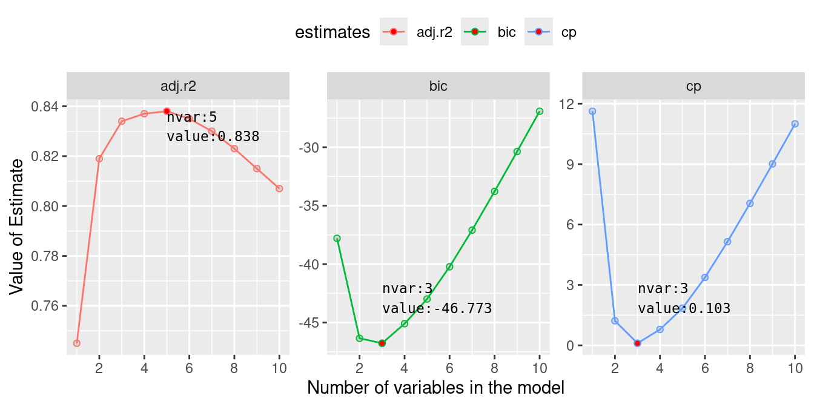

Adding new variables to a model can introduce noise, complicating analysis. Simpler models tend to be better because they’re easier to understand and contain less noise. Statistical methods can help us choose the best variables and improve our models.
This tutorial will show you how to compare models to find the best one. Using the mtcars dataset available in R, it will explore methods for variable selection that help build efficient models with fewer variables. Here are two popular techniques for selecting the best subset of variables:
Best subset method
The best subset selection procedure identifies the optimal regression model by evaluating all possible subsets of variables. As the number of variables increases, the number of potential combinations grows exponentially. For instance, with 2 variables, there are 4 possible subsets: one with no predictors, two with single predictors, and one with both predictors. With 4 variables, the number of possible subsets jumps to 16. Consequently, fitting all possible subsets of a large number of predictors can become computationally intensive.
After fitting all possible models, they are compared based on various criteria. These criteria may include the coefficient of determination (\(R^2\)), adjusted \(R^2\), Mallow’s CP, AIC, and BIC. In R, we can use the leaps package for this task. Let’s look at the mtcars example to see this in action.
Complete/full model
Fitting a complete model
full.model <-lm(mpg ~ ., data = mtcars)smry <-summary(full.model)smry
Call:
lm(formula = mpg ~ ., data = mtcars)
Residuals:
Min 1Q Median 3Q Max
-3.4506 -1.6044 -0.1196 1.2193 4.6271
Coefficients:
Estimate Std. Error t value Pr(>|t|)
(Intercept) 12.30337 18.71788 0.657 0.5181
cyl -0.11144 1.04502 -0.107 0.9161
disp 0.01334 0.01786 0.747 0.4635
hp -0.02148 0.02177 -0.987 0.3350
drat 0.78711 1.63537 0.481 0.6353
wt -3.71530 1.89441 -1.961 0.0633 .
qsec 0.82104 0.73084 1.123 0.2739
vs 0.31776 2.10451 0.151 0.8814
am 2.52023 2.05665 1.225 0.2340
gear 0.65541 1.49326 0.439 0.6652
carb -0.19942 0.82875 -0.241 0.8122
---
Signif. codes: 0 '***' 0.001 '**' 0.01 '*' 0.05 '.' 0.1 ' ' 1
Residual standard error: 2.65 on 21 degrees of freedom
Multiple R-squared: 0.869, Adjusted R-squared: 0.8066
F-statistic: 13.93 on 10 and 21 DF, p-value: 3.793e-07
Here, we can see that the model has explained almost 86.9 percent of variation present in mpg, but non of the predictors are significant. This is a hint of having unnecessary variables that has increased model error. Using regsubsets function from leaps package, we can select a subset of predictors based on some criteria.
Selecting best subset
Selecting best subset model
library(leaps)best.subset <-regsubsets(x = mtcars[, -1], # predictor variablesy = mtcars[, 1], # response variable (mpg)nbest =1, # top 1 best modelnvmax =ncol(mtcars) -1, # max. number of variable (all)method ="exhaustive"# search all possible subset)bs.smry <-summary(best.subset)
We can combine following summary output with a plot created from additional estimates to get some insight. These estimates are also found in the summary object. The output show which variables are included with a star(*).
We can make a plot to visualise the properties of these individual models and select a model with specific number of predictor that can give minimum BIC, or minimum CP or maximum adjusted rsquared.
Plotting Adj-Rsq, BIC, and CP
bs.est.select <- bs.est %>%group_by(estimates) %>%filter( (value ==max(value) & estimates =="adj.r2") | (value ==min(value) & estimates !="adj.r2") )ggplot(bs.est, aes(nvar, value, color = estimates)) +geom_point(shape =21, fill ="lightgray") +geom_line() +facet_wrap(~estimates, scale ="free_y") +theme(legend.position ="top") +labs(x ="Number of variables in the model",y ="Value of Estimate" ) +scale_x_continuous(breaks =seq(0, 10, 2)) +geom_point(data = bs.est.select, fill ="red",shape =21 ) +geom_text(aes(label =paste0("nvar:", nvar, "\n", "value:", value)),data = bs.est.select,size =3, hjust =0, vjust =c(1, -1, -1),color ="black", family ="monospace" )

Adj-Rsq, BIC, and Mallows’ CP for models with increasing number of predictors
From these plots, we see that with 5 variables we will obtain maximum adjusted coefficient of determination (\(R^2\)). Similarly, both BIC and Mallow CP will be minimum for models with only 3 predictor variables. With the help of table above, we can identify these variables. From the table, row corresponding to 3 variables, we see that the three predictors are wt, qsec and am. To obtain maximum adjusted \(R^2\), disp and hp should be added to the previous 3 predictors.
This way, we can reduce a model to few variables optimising different assessment criteria. Let look at the fit of these reduced models:
Call:
lm(formula = mpg ~ wt + qsec + am, data = mtcars)
Residuals:
Min 1Q Median 3Q Max
-3.4811 -1.5555 -0.7257 1.4110 4.6610
Coefficients:
Estimate Std. Error t value Pr(>|t|)
(Intercept) 9.6178 6.9596 1.382 0.177915
wt -3.9165 0.7112 -5.507 6.95e-06 ***
qsec 1.2259 0.2887 4.247 0.000216 ***
am 2.9358 1.4109 2.081 0.046716 *
---
Signif. codes: 0 '***' 0.001 '**' 0.01 '*' 0.05 '.' 0.1 ' ' 1
Residual standard error: 2.459 on 28 degrees of freedom
Multiple R-squared: 0.8497, Adjusted R-squared: 0.8336
F-statistic: 52.75 on 3 and 28 DF, p-value: 1.21e-11
Model summary of model with 5 variables
summary(model.5)
Call:
lm(formula = mpg ~ wt + qsec + am + disp + hp, data = mtcars)
Residuals:
Min 1Q Median 3Q Max
-3.5399 -1.7398 -0.3196 1.1676 4.5534
Coefficients:
Estimate Std. Error t value Pr(>|t|)
(Intercept) 14.36190 9.74079 1.474 0.15238
wt -4.08433 1.19410 -3.420 0.00208 **
qsec 1.00690 0.47543 2.118 0.04391 *
am 3.47045 1.48578 2.336 0.02749 *
disp 0.01124 0.01060 1.060 0.29897
hp -0.02117 0.01450 -1.460 0.15639
---
Signif. codes: 0 '***' 0.001 '**' 0.01 '*' 0.05 '.' 0.1 ' ' 1
Residual standard error: 2.429 on 26 degrees of freedom
Multiple R-squared: 0.8637, Adjusted R-squared: 0.8375
F-statistic: 32.96 on 5 and 26 DF, p-value: 1.844e-10
From these output, it seems that although adjusted \(R^2\) has increased in later model, the additional variables are not significant. we can compare these two model with an ANOVA test which compares the residual variance between these two models. We can write the hypothesis as,
\(H_0:\)Model 1 and Model 2 are same vs \(H_1:\)Model 1 and Model 2 are different
where, Model 1 and Model 2 represents 3 variable and 5 variable model
Anova comparing Model with 3 and 5 variables
anova(model.3, model.5)
Analysis of Variance Table
Model 1: mpg ~ wt + qsec + am
Model 2: mpg ~ wt + qsec + am + disp + hp
Res.Df RSS Df Sum of Sq F Pr(>F)
1 28 169.29
2 26 153.44 2 15.848 1.3427 0.2786
The ANOVA result can not reject the hypothesis so claim that Model 1 and Model 2 are same. So, it is better to select the simpler model with 3 predictor variables.
Step-wise selection
In this section, we’ll explore another type of variable selection method, similar yet distinct from best subset selection method. We will explore forward and backward stepwise selection methods using the mtcars dataset in R. We’ll briefly compare these methods and provide insights into their application.
Forward selection starts with an empty model, and predictors are added one by one based on a selection criterion, typically the Akaike Information Criterion (AIC).
Forward selection
# Initial empty modelinitial_model <-lm(mpg ~1, data = mtcars)# Full model with all predictorsfull_model <-lm(mpg ~ ., data = mtcars)# Stepwise forward selectionforward_model <- MASS::stepAIC( initial_model, direction ="forward", scope =list(lower = initial_model, upper = full_model))# Summary of the forward selection modelsummary(forward_model)
Backward selection begins with the full model, removing one predictor at a time to improve the model according to the chosen criterion, typically AIC.
Backward selection
# Full model with all predictorsfull_model <-lm(mpg ~ ., data = mtcars)# Stepwise backward selectionbackward_model <- MASS::stepAIC( full_model, direction ="backward")# Summary of the backward selection modelsummary(backward_model)
Start: AIC=70.9
mpg ~ cyl + disp + hp + drat + wt + qsec + vs + am + gear + carb
Df Sum of Sq RSS AIC
- cyl 1 0.0799 147.57 68.915
- vs 1 0.1601 147.66 68.932
- carb 1 0.4067 147.90 68.986
- gear 1 1.3531 148.85 69.190
- drat 1 1.6270 149.12 69.249
- disp 1 3.9167 151.41 69.736
- hp 1 6.8399 154.33 70.348
- qsec 1 8.8641 156.36 70.765
<none> 147.49 70.898
- am 1 10.5467 158.04 71.108
- wt 1 27.0144 174.51 74.280
Step: AIC=68.92
mpg ~ disp + hp + drat + wt + qsec + vs + am + gear + carb
Df Sum of Sq RSS AIC
- vs 1 0.2685 147.84 66.973
- carb 1 0.5201 148.09 67.028
- gear 1 1.8211 149.40 67.308
- drat 1 1.9826 149.56 67.342
- disp 1 3.9009 151.47 67.750
- hp 1 7.3632 154.94 68.473
<none> 147.57 68.915
- qsec 1 10.0933 157.67 69.032
- am 1 11.8359 159.41 69.384
- wt 1 27.0280 174.60 72.297
Step: AIC=66.97
mpg ~ disp + hp + drat + wt + qsec + am + gear + carb
Df Sum of Sq RSS AIC
- carb 1 0.6855 148.53 65.121
- gear 1 2.1437 149.99 65.434
- drat 1 2.2139 150.06 65.449
- disp 1 3.6467 151.49 65.753
- hp 1 7.1060 154.95 66.475
<none> 147.84 66.973
- am 1 11.5694 159.41 67.384
- qsec 1 15.6830 163.53 68.200
- wt 1 27.3799 175.22 70.410
Step: AIC=65.12
mpg ~ disp + hp + drat + wt + qsec + am + gear
Df Sum of Sq RSS AIC
- gear 1 1.565 150.09 63.457
- drat 1 1.932 150.46 63.535
<none> 148.53 65.121
- disp 1 10.110 158.64 65.229
- am 1 12.323 160.85 65.672
- hp 1 14.826 163.35 66.166
- qsec 1 26.408 174.94 68.358
- wt 1 69.127 217.66 75.350
Step: AIC=63.46
mpg ~ disp + hp + drat + wt + qsec + am
Df Sum of Sq RSS AIC
- drat 1 3.345 153.44 62.162
- disp 1 8.545 158.64 63.229
<none> 150.09 63.457
- hp 1 13.285 163.38 64.171
- am 1 20.036 170.13 65.466
- qsec 1 25.574 175.67 66.491
- wt 1 67.572 217.66 73.351
Step: AIC=62.16
mpg ~ disp + hp + wt + qsec + am
Df Sum of Sq RSS AIC
- disp 1 6.629 160.07 61.515
<none> 153.44 62.162
- hp 1 12.572 166.01 62.682
- qsec 1 26.470 179.91 65.255
- am 1 32.198 185.63 66.258
- wt 1 69.043 222.48 72.051
Step: AIC=61.52
mpg ~ hp + wt + qsec + am
Df Sum of Sq RSS AIC
- hp 1 9.219 169.29 61.307
<none> 160.07 61.515
- qsec 1 20.225 180.29 63.323
- am 1 25.993 186.06 64.331
- wt 1 78.494 238.56 72.284
Step: AIC=61.31
mpg ~ wt + qsec + am
Df Sum of Sq RSS AIC
<none> 169.29 61.307
- am 1 26.178 195.46 63.908
- qsec 1 109.034 278.32 75.217
- wt 1 183.347 352.63 82.790
Call:
lm(formula = mpg ~ wt + qsec + am, data = mtcars)
Residuals:
Min 1Q Median 3Q Max
-3.4811 -1.5555 -0.7257 1.4110 4.6610
Coefficients:
Estimate Std. Error t value Pr(>|t|)
(Intercept) 9.6178 6.9596 1.382 0.177915
wt -3.9165 0.7112 -5.507 6.95e-06 ***
qsec 1.2259 0.2887 4.247 0.000216 ***
am 2.9358 1.4109 2.081 0.046716 *
---
Signif. codes: 0 '***' 0.001 '**' 0.01 '*' 0.05 '.' 0.1 ' ' 1
Residual standard error: 2.459 on 28 degrees of freedom
Multiple R-squared: 0.8497, Adjusted R-squared: 0.8336
F-statistic: 52.75 on 3 and 28 DF, p-value: 1.21e-11
Comparing best subset and stepwise selection method
Best subset selection considers all possible combinations of predictors and selects the model with the best performance based on a specified criterion (e.g., AIC, BIC, adjusted R²). While comprehensive, this method can be computationally expensive for datasets with a large number of predictors.
Best Subset Selection: Evaluates every possible model, providing the optimal model based on the criterion. It ensures the best fit but at a high computational cost.
Stepwise Selection (Forward and Backward): Evaluates models sequentially. It’s more computationally efficient but may not guarantee the globally optimal model.
Stepwise selection methods, whether forward or backward, provide a practical approach to model selection by adding or removing predictors based on defined criteria. While not as exhaustive as best subset selection, they offer a balance between computational efficiency and model performance. By understanding and applying these methods within the mtcars dataset, we can navigate model selection systematically and efficiently.
Glossary
R-squared (R²): A statistical measure representing the proportion of the variance for the dependent variable that’s explained by the independent variables in the model. R² values range from 0 to 1, with higher values indicating better model performance.
Adjusted R-squared (R² adjusted): Adjusted R² modifies R² to account for the number of predictors in the model. It provides a more accurate measure when comparing models with a different number of predictors, as it penalizes the addition of non-informative predictors.
Akaike Information Criterion (AIC): AIC is an estimator of the relative quality of statistical models for a given set of data. It balances the goodness of fit of the model with the number of predictors, penalizing more complex models to avoid overfitting. Lower AIC values indicate better models.
Bayesian Information Criterion (BIC): Similar to AIC, BIC also evaluates model quality but imposes a more substantial penalty for the number of predictors. BIC is used to discourage overfitting, and lower BIC values indicate a better model.
Mallow’s CP: Mallow’s CP criterion assesses the trade-off between model complexity and goodness of fit. Lower values of CP are desired, with CP values close to the number of predictors plus one indicating well-fitted models.